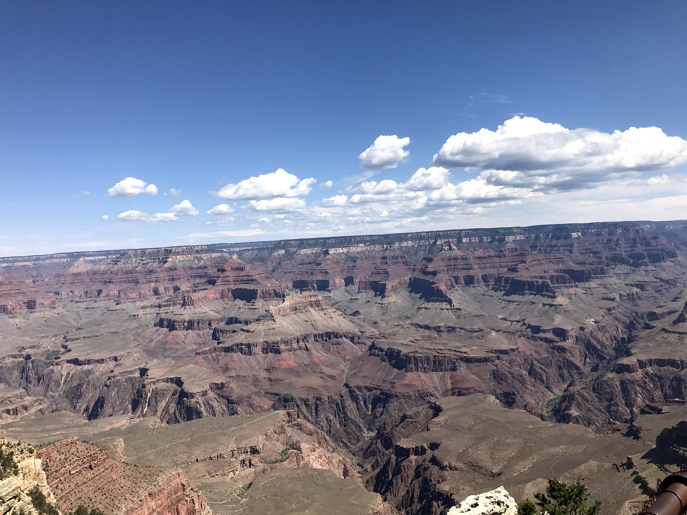
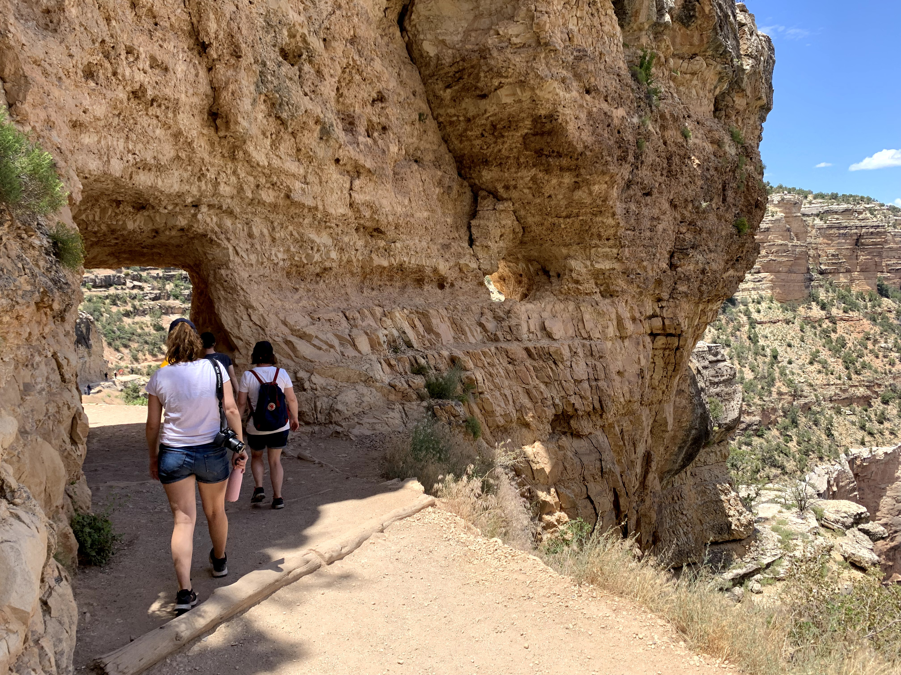

The Grand Canyon is VAST. From pictures you do not appreciate the full scale of what you are looking at. At one of the viewing points we were looking at landmarks on the opposite side of the canyon which were 9 miles away! As well as walking along the rim of the canyon we took the Bright Angel trail down below the rim for about a mile to get a feel for what it must be like to walk down to the Colorado river. The path descends 5000 feet to the river and for every 1000 feet you descend the temperature increases by 2 degrees. At the top the temperature was 32 degrees.
 